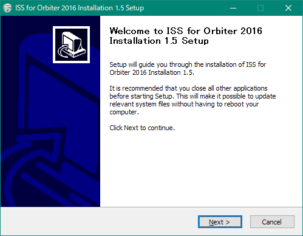
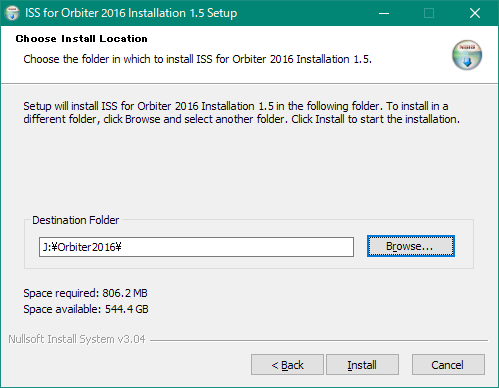
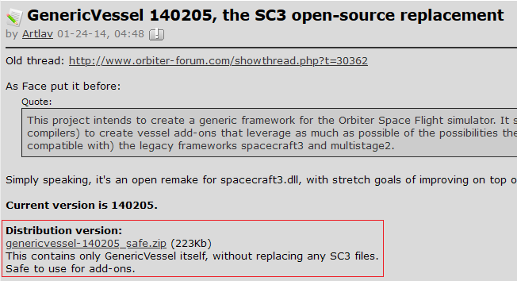
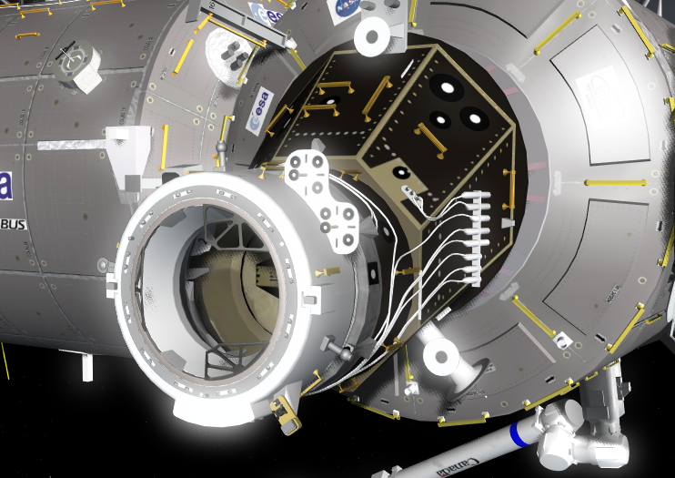

ISS for Orbiter 2016のダウンロード+インストール
ISS for Orbiter 2016は、これまでに公開されたISS及び関連するモジュールを統合したMODです。
警告
3Dグラフィック性能の低いPCの場合、正常に動作しなかったり、動作が非常に重くなる可能性があります。
ダウンロード
Donamy and Thorton's ISS for Orbiter 2016
インストール
ダウンロードした実行ファイル(ISS for Orbiter 2016.exe)をダブルクリック。
Windows10の場合、いくつか警告が表示されることがあるが、無視して続行する（許可する）。
インストーラの画面が表示されたら、Nextをクリックして続行する。

Browseをクリックして、Orbiterがインストールされているフォルダを指定する。
Installをクリックすると自動的にインストールされる。

必要なファイル
以下のMODを導入していない環境では動作しない。
Spacecraft3.dll
Spacecraft.dll+Multistage.dll+Stage.dllのダウンロード
GenericVessel
GenericVessel 140205, the SC3 open-source replacement
Distribution version:の下のリンクをクリックしてダウンロードする。

ダウンロードしたzipファイルを解凍して、中身をOrbiterフォルダに上書き。
アンインストール
uninst.exeをダブルクリック。
アンインストーラが起動したら、はいをクリック。
操作方法
ISS A to Z(Orbiter2010)とほぼ同じ手順で操作できる。
また、ISS for Orbiter 2016にはCanadarm2MODが付属している。
ドッキング
ドッキングアダプター(IDA-2)とドッキングするときは、相対速度を0.05[m/s]までに抑える。
速度が大きすぎると接続できない。

強制終了するとき
D3D9Clientを使用する場合は、必ずシンボリックリンクを作成しておくこと。
D3D9Clientを導入する
Windows10環境において、Canadarm2MODが原因で強制終了することがある。
このような場合は、SSRMSD.dllを差し替える。
Canadarm2MODのダウンロード+インストール
Modulesフォルダを開いて、SSRMSD.dllを新しいものに上書きする。